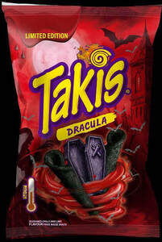

Trade Mark Journal No.2026/012 20 March 2026
UK00004349071 4 March 2026 (30)

- Class 30
- Flour; Cereal preparations; Bread; White bread; Sandwich bread; Buns, Toasted bread; Breadcrumbs; Sweet bread; Sandwiches; Toasted sandwiches; Ice cream sandwiches; Sandwiches containing fish; Sandwiches containing chicken; Sandwiches; Frankfurter sandwiches; Hamburgers contained in bread rolls; Toasted cheese sandwich; Wraps [sandwich]; Hot dog sandwiches; Cheeseburgers [sandwiches]; Toasted cheese sandwich with ham; Sandwich spread made from chocolate and nuts; Hamburgers contained in bread rolls; Hot dogs (prepared); Rice crisps; Vegetable flavoured corn chips; Wholewheat crisps; Snack food products consisting of cereal products; Quesadillas; Snack food products made from maize flour; Taco chips; Tacos; Spring rolls; Ready to eat savory snack foods made from maize meal formed by extrusion; Pre-cooked foodstuffs and savoury snacks, namely snacks based on corn, cereals, flour and sesame, crackers, dumplings, pancakes, dishes based on pasta, rice and cereals, tarts and pastry dishes, sandwiches and pizzas, spring and seaweed rolls, steamed buns, dishes based on corn tortillas; Salts, seasonings, flavourings and condiments; Snack foods made from corn; Snack foods made from wheat; Sesame snacks; Crisps made of cereals; Puffed corn snacks; Filled baguettes; Sandwiches containing meat; Sandwiches containing fish; Pre-packaged lunches consisting primarily of rice, and also including meat, fish or vegetables; Prepared meals containing [principally] pasta; Pies [sweet or savoury]; Enchiladas; Crackers flavoured with spices; Pre-baked pizzas crusts; Flavoured popcorn; Chocolate-based ready-to-eat food bars; Pastries; Confectionery; Edible ices; Sugar; Honey; Treacle; Yeast; Baking powder; Salt; Mustard; Vinegar; Sauces [condiments]; Spices; Ice for refreshment; Tea; Cocoa; Rice; Tapioca; Sago; Meat tenderizers, for household purposes; Gluten additives for culinary purposes; Marinades; Sea water for cooking; Peppers [seasonings]; Capers; Seaweed [condiment]; Farinaceous foods; Dressings for salad; Gruel, with a milk base, for food; Star aniseed; Aniseed; Aromatic preparations for food; Oat-based food; Crushed oats; Husked oats; Oatmeal; Saffron [seasoning]; Sweets; Palm sugar; Cereal bars; High-protein cereal bars; Stick liquorice [confectionery]; Cocoa-based beverages; Chocolate-based beverages; Tea-based beverages; Baking soda [bicarbonate of soda for cooking purposes]; Rusks; Buns; Puddings; Cinnamon [spice]; Sweetmeats [candy]; Caramels [candy]; Crushed barley; Husked barley; Cereals; Beer vinegar; Chewing gum; Chocolate; Chow-chow [condiment]; Chutneys [condiments]; Cloves [spice]; Noodle-based prepared meals; Condiments; Oat flakes; Chips [cereal products]; Corn flakes; Fruit coulis [sauces]; Preparations for stiffening whipped cream; Custard; Cream of tartar for culinary purposes; Turmeric; Curry [spice]; Couscous [semolina]; Confectionery; Natural sweeteners; Pies; Pâtés en croûte; Essences for foodstuffs, except etheric essences and essential oils; Spaghetti; Binding agents for ice cream; Sausage binding materials; Thickening agents for cooking foodstuffs; Malt extract for food; Starch for food; Leaven; Ferments for pastes; Noodles; Vermicelli [noodles]; Wheat flour; Biscuits; Petit-beurre biscuits; Crackers; Wheat germ for human consumption; Glucose for culinary purposes; Gluten prepared as foodstuff; Waffles; Fruit jellies [confectionery]; Groats for human food; Bean meal; Halvah; Ice cream; Ice, natural or artificial; Garden herbs, preserved [seasonings]; Hominy; Infusions, not medicinal; Royal jelly; Ginger [spice]; Meat gravies; Ketchup [sauce]; Cocoa beverages with milk; Chocolate beverages with milk; Linseed for human consumption; Macaroons [pastry]; Macaroni; Corn flour; Corn, milled; Corn, roasted; Malt biscuits; Malt for human consumption; Maltose; Peanut confectionery; Dough; Cake batter; Mayonnaise; Marzipan; Molasses for food; Peppermint sweets; Mint for confectionery; Mustard meal; Chocolate mousses; Dessert mousses [confectionery]; Muesli; Nutmeg; Unleavened bread; Gingerbread; Breadcrumbs; Dinner rolls; Potato flour; Almond paste; Fondants [confectionery]; Soya bean paste [condiment]; Pasta; Cakes; Meat pies; Rice cakes; Petits fours [cakes]; Lozenges [confectionery]; Pesto [sauce]; Pepper; Allspice; Pizzas; Powders for making ice cream; Cake powder; Pralines; Ham glaze; Cake frosting [icing]; Confectionery for decorating Christmas trees; Propolis; Quiches; Ravioli; Rice-based snack food; Cereal-based snack food; Liquorice [confectionery]; Relish [condiment]; Spring rolls; Popcorn; Flavourings, other than essential oils, for beverages; Flavourings, other than essential oils, for cakes; Celery salt; Cooking salt; Salt for preserving foodstuffs; Soya sauce; Tomato sauce; Sauces [condiments]; Pasta sauce; Seasonings; Semolina; Hominy grits; Sherbets [ices]; Artificial coffee; Sushi; Tabbouleh; Tapioca flour; Tarts; Iced tea; Tortillas; Pancakes; Vanilla flavourings for culinary purposes; Vanillin [vanilla substitute]; Vinegar; Frozen yoghurt [confectionery ices]; Lollipops; Processed grains; Starches; Bakery products and yeast; Extruded snacks containing corn; Piccalilli.
Grupo Bimbo, S.A.B. de C.V.
Representative: Abion UK Limited